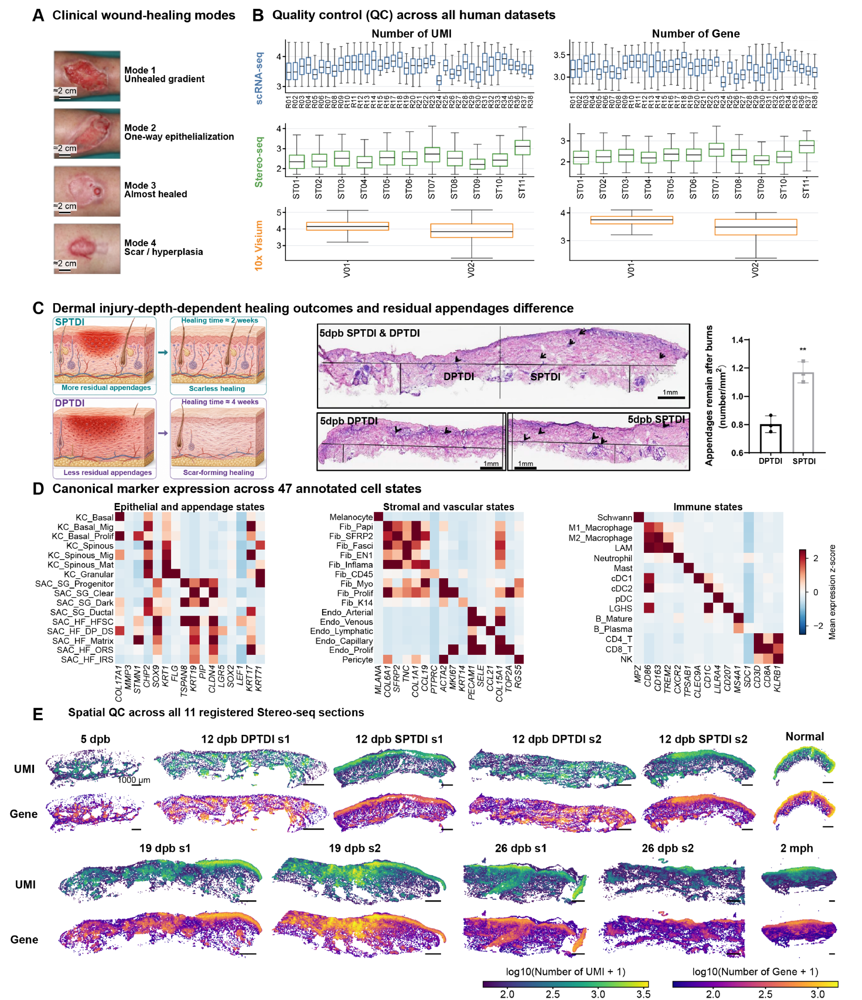

Human assay sample aliases, retained QC observations, and supporting atlas resources.
Executed supporting analyses and/or archived sources; see panel-specific status
Source data · Panel manifest · Execution report

| Panel | Description | Status |
|---|---|---|
| S1A | (A) Representative clinical wound photographs illustrating the four morphological repair modes. | partial |
| S1B | (B) Per-sample quality-control distributions for log-transformed transcript and detected-gene counts in 38 human scRNA-seq samples, 11 Stereo-seq sections, and two Visium sections. Modalities are shown separately. Table S1, Figure_sample_crosswalk, maps R01–R38, ST01–ST11, and V01–V02 to source sample/section and participant identifiers. | partial |
| S1C | (C) Schematic comparison of appendage preservation in SPTDI and DPTDI, with representative H&E sections and displayed appendage measurements. The approximately 2- and 4-week intervals summarize the illustrated clinical course. Overview scale bars are 1 mm. | partial |
| S1D | (D) Canonical marker-expression heatmap supporting the hierarchical annotation of 47 cell states. | partial |
| S1E | (E) Spatial distributions of retained transcript and detected-gene counts in 11 human Stereo-seq sections. Color scales show log-transformed counts as indicated in the artwork. Scale bars, 1,000 micrometers. | partial |